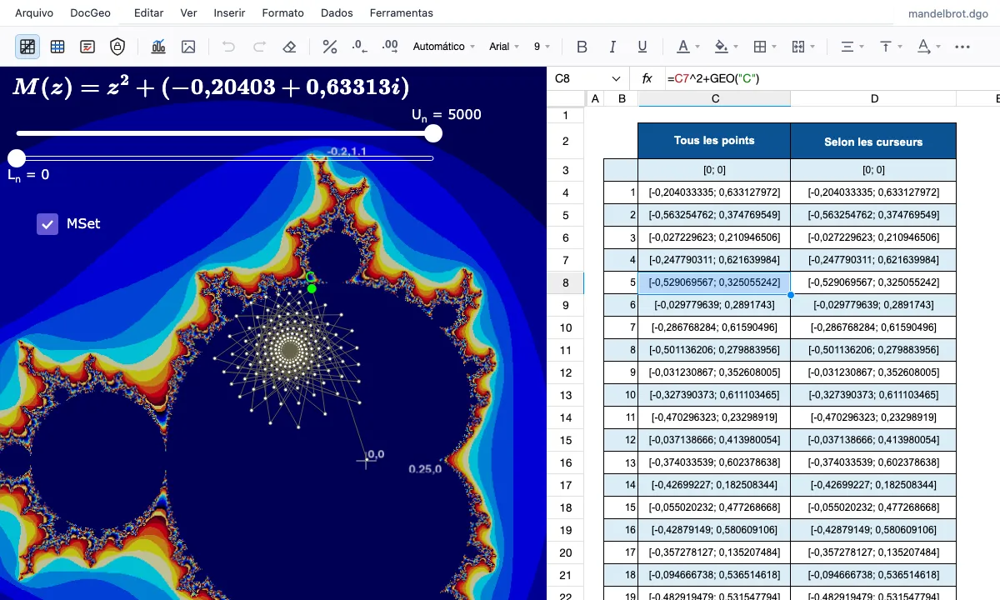

A planilha
Uma aba do DocGeo pode conter uma folha do DocCells, a planilha do DocTools: ao lado da figura, ou sozinha em sua própria aba. A figura e as células se leem mutuamente, ao vivo.

No exemplo acima, o conjunto de Mandelbrot:
-
a coluna C calcula a órbita de 0 por z ↦ z² + C, sendo C o
ponto verde da figura: C3 contém
[0; 0], C4=GEO("C")e C5=C4^2+GEO("C"), copiada para baixo até C5002. Uma lista de dois números calcula-se como um ponto da figura, ou seja, como um número complexo; -
a coluna D só guarda os termos cuja ordem, na coluna B, está
entre os seletores Ln e Un, lidos por
GEO("L_n")eGEO("U_n"); -
a figura relê estes termos com
c = !D3:D5001e desenha-os, ligados por segmentos, comd = Lista(c).
Ao arrastar C, os 5000 termos são recalculados e a linha acompanha durante o movimento: fica limitada enquanto C está no conjunto, e escapa quando se tira C dele.
Adicionar uma planilha
| Ação | Como |
|---|---|
| Ao lado da figura | Arquivo › Vista › Nova vista de planilha: uma coluna a mais, à direita, com uma folha vazia; as colunas ficam com a mesma largura (várias vistas) |
| Em sua própria aba | Arquivo › Nova aba de planilha: uma aba “Planilha1”, “Planilha2”…, que contém apenas uma folha (pastas de trabalho) |
| Redimensionar, mover | arrastar a separação das colunas; Arquivo › Vista › Mover a vista para a esquerda ou para a direita, quando a vista de planilha está ativa |
| Eliminar | Arquivo › Vista › Eliminar a vista de planilha: a vista e suas células desaparecem, a figura retoma o espaço. Uma aba de planilha é eliminada como qualquer aba. |
- Uma aba tem no máximo uma vista de planilha: Nova vista de planilha fica acinzentado quando ela já tem uma.
- Uma vista de planilha mostra uma única folha, sem abas de folhas. Para trabalhar com várias folhas, criam-se várias abas de planilha, que se leem entre si (veja abaixo).
- Adicionar ou eliminar uma vista de planilha pode ser desfeito, como as outras ações sobre as vistas.
Os menus e os botões da planilha
Um clique ou uma tecla nas células torna ativa a vista de planilha. As barras do DocGeo dão então lugar às da planilha, na mesma altura: nada se move abaixo.
- A barra de menus mantém Arquivo, seguido do menu DocGeo e depois dos menus da planilha.
- A barra de botões da planilha (formato dos números, fonte, negrito, cores, bordas, alinhamento…) substitui a barra de ações do DocGeo.
- O menu DocGeo oferece o que continua útil: Histórico da construção, Paleta de ferramentas, Propriedades e o Manual de utilização.
- Volta-se às barras do DocGeo com um clique na figura ou no painel “Construção”, digitando ali uma linha, ou mudando de aba. Em uma aba de planilha, as barras da planilha permanecem.
- Uma caixa de diálogo da planilha (formatação condicional, formato dos números…) vela toda a janela do DocGeo até ser fechada.
O painel “Construção” continua disponível em uma aba de planilha (DocGeo › Histórico da construção): um objeto digitado ali é calculado sem ser desenhado, e as células dessa aba podem lê-lo.
Quando o DocGeo está incorporado em outra página, como o DocTools, ele não tem barra de menus: a planilha mantém suas barras no alto de sua coluna.
A figura lê as células
Uma fórmula da figura designa uma célula da vista de planilha da
aba por um ponto de exclamação seguido do endereço da célula:
!B3.
| Escrita | Valor |
|---|---|
!B3 |
a célula B3 |
!B2:B21 |
um intervalo de uma linha ou de uma coluna: uma lista de valores |
!A1:C3 |
um retângulo: uma lista de linhas, cada uma uma lista |
Planilha1!B3 |
a célula B3 de uma aba de planilha |
'Figura 1'!!B3 |
a célula B3 da vista de planilha de outra aba |
A = (!B1, !B2)
r = !B3
L = !A1:A10-
O endereço é escrito com letras maiúsculas e depois algarismos
(
B3,AA12), sem$, logo após o ponto de exclamação. A negação de um objeto chamado A1 escreve-se!(A1). -
Um número, um texto, um booleano ou uma lista é lido tal como
está; uma data é lida como um número. Uma célula contém uma
lista digitada entre colchetes,
[2; 1], ou calculada:=[2; 1]*3. Uma célula vazia ou com erro (#DIV/0!…) dá um valor indefinido: o objeto que a lê não é desenhado. - Assim que uma célula muda, por uma digitação ou pelo cálculo da planilha, os objetos que a leem são recalculados e redesenhados.
- Uma referência é apenas parte de uma fórmula: não cria nenhum objeto. Um ponto lido nas células, como A acima, é calculado: não se arrasta com o mouse. Para movê-lo, mudam-se as células.
Indicar as células com o mouse
Enquanto se digita uma linha no painel “Construção”, não é preciso
digitar o endereço: um clique numa célula da vista de planilha
insere !B3 no cursor, e arrastar sobre várias
células insere o intervalo, !A1:A20, atualizado
durante o movimento. Uma moldura pontilhada mostra as células
indicadas; o cursor permanece na linha, que se continua a
digitar. Fora de uma digitação, um clique nas células as
seleciona como de costume.
As células de outra aba
O nome da aba vem primeiro, entre apóstrofos se contiver um
espaço ou um sinal, como para
ler outra aba:
Planilha1!B3. Se essa aba também tem uma figura,
dobra-se o ponto de exclamação, 'Figura 1'!!B3,
pois 'Figura 1'!B3 designa o objeto B3 da sua
figura. Suas células são lidas como estavam calculadas quando
se saiu dessa aba.
As células leem a figura: GEO
Em uma célula, a função GEO lê o valor de um objeto
da figura, designado por seu nome entre aspas.
=GEO("c")
=GEO("'Figura 1'!c")
=2*GEO("r")+1- O valor é aquele que uma fórmula da figura leria ao nomear o objeto: comprimento de um segmento, valor de uma expressão ou de um controle deslizante, texto, estado de uma caixa de seleção… Ele acompanha a figura enquanto ela é manipulada.
-
Um ponto é lido como a lista de suas coordenadas:
=GEO("A")dá[1; 2], com a qual se calcula como com uma lista:=GEO("A")*2. -
Um objeto desconhecido, indefinido, ou que não é nem número,
nem texto, nem booleano, nem ponto, nem lista dá
#N/A. O nome deve estar escrito na fórmula:=GEO(A1)dá#VALUE!. -
GEO("'Figura 1'!c")lê o objeto c de outra aba: é assim que uma aba de planilha lê uma figura. -
GEOtem o mesmo nome em todos os idiomas. Ela só existe no DocGeo: no DocCells sozinho, dá#N/A.
Indicar os objetos com o mouse
Enquanto se digita uma fórmula numa célula (ou na barra de
fórmulas), não é preciso digitar o nome de um objeto: um clique
num objeto da figura insere GEO("A") no cursor, ou
=GEO("A") se a célula estava vazia. Um clique noutro
objeto, logo em seguida, substitui o primeiro. A fórmula
continua em digitação: continua-se, depois confirma-se com
Enter ou cancela-se com Esc. A vista de
planilha continua ativa, e o objeto clicado não é selecionado
nem movido. Fora de uma fórmula, um clique na figura funciona
como de costume.
Referência circular
Um objeto lido por GEO não pode depender de uma
célula que depende dele. Se A1 contém
=GEO("m")+1, redefinir m pela linha
m = !A1 é recusado: “Referência circular:
!A1”.
Da mesma forma, uma fórmula de célula que fecharia um ciclo com a figura é anulada com essa mensagem, e as células retomam seu conteúdo anterior. Em um arquivo que contém mesmo assim um ciclo, a leitura que o fecha é indefinida.
Desfazer e salvar
- As células têm seu próprio desfazer: Ctrl Z nas células, ou os menus da planilha. Os botões do DocGeo não desfazem uma digitação na planilha.
-
As células, suas fórmulas e sua formatação são salvas com a
figura, no mesmo arquivo
.dgo. Ctrl S nas células, ou Arquivo › Salvar, salva tudo.
Para os alunos
O leitor do DocGeo, como uma figura incorporada em uma página web, mostra a folha sem seus menus nem seus botões, com sua barra de fórmulas.
- O aluno pode digitar nas células, como em um campo de entrada: a figura acompanha.
- O botão de reinicialização devolve as células como foram salvas.
- Essas digitações não fazem parte da resposta do aluno guardada por uma página que incorpora a figura: só os objetos da figura.
A planilha é um aplicativo à parte, carregado apenas se a aba
mostrada tiver uma. Em um site que hospeda sua própria cópia do
DocGeo, a pasta doccells deve ser publicada ao lado
da pasta do DocGeo; caso contrário, a vista de planilha mostra
“⚠ DocCells”, e o resto da figura funciona.